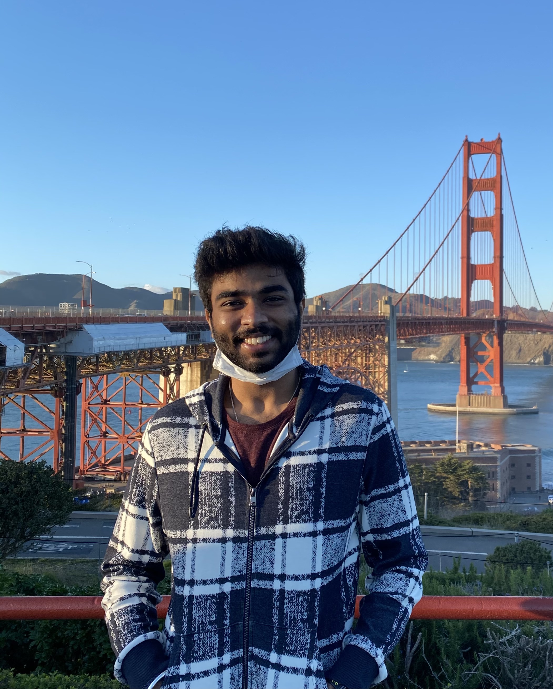

|  |
Kartikeyan SubramanyamBachelor's in Computer ScienceDepartment of Computer Science and EngineeringUniversity of California, San Diego |
| Email: |
kartikeyansubramanyam@gmail.com kasubram@ucsd.edu |
| Phone: | (702)-972-7348 |
| Research |
Over my 2 years as a Research Assistant, I have worked for the Aerosec group at UCSD researching security concerns in aviation as well as for the System Energy Efficiency Lab (SeeLab) at UCSD, where I worked on accelerating Fully Homomorphic Encryption operations in Deep Neural Networks. While I cannot publicly post the work I have done with Aerosec due to matters of national and industrial security, I can still talk about my work (to a certain degree).
FHEmem: Bit-serial Processing In-Memory Accelerator for Fully Homomorphic Encryption.
VMaaS Intern at Securin (July 2022 - January 2023)Research Assistant at UCSD (July 2022 - Present)
- Created an NLP model to enumerate vulnerability types and weaknesses from data ingested from the NVD. Imported 210,000+ CVEs and the resulting model had a 92% prediction accuracy rate.
- Conducted vulnerability scans on internal assets and networks using scanners such as Qualys, Nessus, Nexpose, and Ivanti Neurons to identify existing vulnerabilities.
- Conducted penetration testing using company tools and schematics, including proprietary scanners, Metasploitable interface, manual reverse engineering, etc.
- Followed the cycle of Vulnerability Management to Identify, Evaluate, Remediate, Verify, and Report the vulnerabilities in an organization's IT infrastructure.
- References:
- Ravi Pandey (Senior Director of Vulnerability Managemen Services at Securin) Email: rpandey@cybersecurityworks.com
- Sandeep Challa (Lead Security Analyst, Securin) Email: sandeep.challa@cybersecurityworks.com
Cybersecurity Intern at Spire Solutions (July 2021 - September 2021)
- Network Security in commercial airplane networks:
- Reverse-engineered the structure of the network, multipurpose VLAN separations, and firewall rules used in the network.
- Mapped the whole network on the aircraft and mapped all open ports to processes using only selectively available logs and relevant files in the disk image. Languages: bash and Python.
- In-Memory Accelerator for Fully Homomorphic Encryption (FHE):
- Configured the Microsoft SEAL library for this research.
- Mapped the data flow within the CNN and optimized the number of operations performed on the encrypted data.
- Produced a workload of 20,000 FHE operations used as the benchmark for the paper. Languages: C# and C++.
- References:
- Aaron Shalev (Assistant Professor, Computer Science and Engineering at UCSD) Email: ashalev@ucsd.edu
- Tajana Rosing (Professor, Computer Science and Engineering at UCSD) Email: tajana@ucsd.edu
- Minxuan Zhou (Ph.D. candidate at UCSD) Email: miz087@eng.ucsd.edu
- Implemented cutting-edge cybersecurity technologies such as CyberObserver, Elastic, AppSpider, and InsightVM and gained experience setting up tools for endpoint analytics, dynamic application security testing, etc.
- Incorporated and calibrated security solutions to the clients' already existing IT infrastructure.
- References:
- Siddhartha Murthinty (Chief Technology Officer, Spire Solutions) Email: siddhartha.murthinty@gmail.com
- Computer Security
- Implemented and learnt methods to mitigate various attacks such as:
- Buffer Overflows
- Side Channel attacks: including memory based and time based side channel attacks
- Web attacks: primarily including SQL injections with escaping, cross site scripting with certain defenses, and cross site request forgery
- Network Attacks: this assignment included social engineering, reverse engineering, and gaining familiarity with command line tools like netcat, nmap, ssh, tcpdump and wget. Found a Zero-day vulnerability in the infrastructure of this assignment that allowed me to snoop on possible solutions and the submissions of other students.
- Computer Networks
- Router: Designed a router that handles communications between 2 emulated servers and a client. Router handles ARP, TCP, UDP, and ICMP packets, and supports wget, ping, and traceroute commands. Implemented longest prefix match and ARP caching. Language: C
- Sliding Window Protocol: Implemented the hosts as threads that run on my processor, and simulated the network links between these hosts (threads). Implemented Sliding Window Protocol that uses selective retransmission and cumulative ACK scheme to achieve reliable transmission of data frames and thereby enabling the receiver to populate the entire original message that the sender had sent. Language: C
- Software Engineering
- "Birds of a Feather": Led and developed a Mobile App alongside a team of 3 other developers that uses the new Nearby API to find and make friends in the same class as the user. Implemented filters to shortlist other users based on user preferences and send messages using the Java Nearby API. Focused on using Agile principles, such as Scrum and standups to brainstorm through development and designing. Constantly maintained an organized Github repository. Language: Java
- Systems Architecture
- "Yodie": Led and developed a custom processor that supports specific Forward Error Correction (FEC) tasks alongside a team of 2 other developers. The instruction set architecture of our processor featured fixed-length instructions (machine code) 9 bits wide. Languages: System Verilog and Python
- Networked Services
- "SurfStore": Created a cloud-based file storage service called SurfStore. SurfStore is a networked file storage application that is based on Dropbox, and lets you sync files to and from the “cloud”. Implemented the cloud service, and a client which interacts with the service via gRPC. Language: Go
- "TritonHTTP": Built a simple web server that implements a subset of the HTTP/1.1 protocol specifications. Clients connect to a port on the server and use the TritonHTTP protocol to retrieve files from the server. The server reads data from the client to interpret one or more requests. Supports pipelined requests. Language: Go
- Operating Systems
- Nachos Operating System: Designed an Operating System by implementing my own threading, scheduling, and multiprogramming functions from scratch to make a functional OS. Language: Java
- Deep Learning
- Taxi Travel Time Prediction Task: Led and developed an MLP Regressor model alongside 2 other developers that is trained on an engineered dataset that incorporates various factors, such as the Type of Call, Local Time in Portugal, Day of the Week, etc. Heavily utilized feature engineering to determine rush-hours and non rush-hours, and the MLP model architecture was built with 4 layers and uses ReLU as an activation function, outputting a single floating point number. Experimented with LSTM models and also a LightGBM model but the MLP Regressor gave us the best results. Language: Python
- Computer Vision
- Compiler Construction
- 'snek' Compiler: Created a Rust compiler to generate x86-64 assembly for a generic language. Optimized the compiler to reduce the number of assembly instructions and implemented let instructions, binary operators, booleans, conditionals, variable assignment, loops, top-level function definitions, heap allocation, and garbage collection. Language: Rust
- Digital Systems
- 6 Tap Linear Feedback Register: Designed an encrypter which reads a message from a range of locations in a register file in 8-bit ASCII format, encrypts the lower 6 bits with a 6-bit PN code, and writes the resulting encrypted message into another range of locations in the same register file. Language: System Verilog
- Traffic Signal: Implemented a traffic signal controller for a junction with a 3-case scenario: East-West Straights, East-West Lefts, and North-South straights. Managed 6 possible states between all 3 sets of traffic lights. Language: System Verilog
- Alarm Clock: Implemented a conventional alarm clock, which tracks and displays hours, minutes, and seconds. Extended the alarm clock functionality to include days of the week and month and date. Language: System Verilog
- Advanced Data Structures
- DNS Blocker: Implemented a hash table-based in-memory database using single linked chains for collision resolution. The database contained the DNS names of websites the client wished to block. If a DNS name is found in the database, it will respond with a blocked message, and not let the host access the webpage. Language: C
- FP Converter: Built a program that reads the file of binary 8-bit FP numbers and converted them to the IEEE Single Precision (32 bit) format. Language: ARM-32
- The Game of Life: Developed by John Conway, the Game of Life is a mathematical simulation of a simplified evolution process. Developed a simulation that occurs on a two-dimensional grid of cells over a series of discrete timesteps. Wrote the fastest program in a class of 250 students. Language: ARM-32
- ETL Program: Made a custom ETL Program to process CSV files Language: C
- Cryptography
- Theory of Computation
Provost Honors, UCSD (2023)
San Diego Capture The Flag 2023
San Diego Capture The Flag 2022
Solved about 60% of challenges on Defend the Web.
Fastest Assembly code in CSE 30 for the Game of Life, UCSD (2020)
High Achiever, Dubai Scholars Private School (2019)
- Technical Skills
- Programming languages: C, Python, Go, Java, C++, Rust, C#, x86, ARM-64, HTML, CSS, SystemVerilog, bash.
- Certifications: CompTIA Security+ (in progress), Qualys VMDR, Qualys Vulnerability Management
- Operating Systems: macOS, Linux, Windows
- Tools: LATEX, Github, Github Actions, NMap, MATLAB, Metasploit, Wireshark, Docker, VMWare, Elastic, Rapid7 - InsightVM & AppSpider & Nexpose, Qualys, RiskSense, Nessus Tenable, Android Studio, Robolectric, JUnit, Zenhub, Visual Studio, Microsoft Office.
- Soft Skills
- Time Management
- Communication
- Work under pressure and with time restrictions
- Teamwork
- Leadership
- Public Speaking
- Linguistic Skills
- English: Fluent in speaking, reading, and writing.
- Hindi: Fluent in speaking, reading, and writing.
- Arabic: Intermediate in speaking, reading, and writing.
- Punjabi: Fluent in speaking.
I graduated from UCSD with a Bachelor's in Computer Science (Cum Laude, Major GPA: 3.65) in June 2023. My educational experiences and activities predominantly involved security, networks, and systems architecture, and I had the oppurtunity to learn from great minds in their respective fields. I was also involved in various clubs and organizations, such as:
During my free time, I like to play golf, surf, listen to music (favorite artists are Eric Clapton, Red Hot Chili Peppers and Radiohead), and read books (my current favorite authors are Fyodor Dostoevsky and Haruki Murakami) and security research papers. I am also an avid NBA fan and am a massive supporter of Kobe Bryant and Kawhi Leonard.
- UCSD Field Hockey Club
- ACM Cyber
- Pi Kappa Alpha